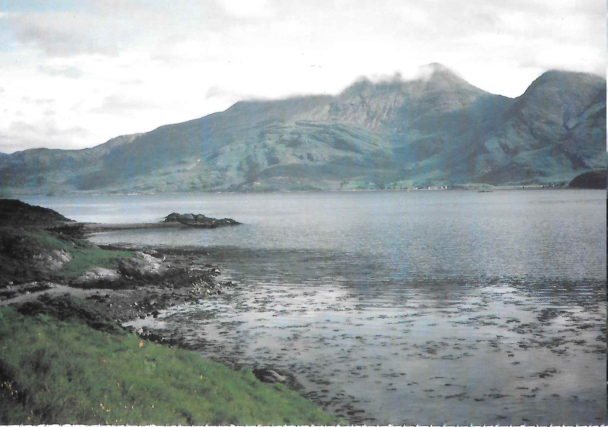

Boat Trip to the Western Highlands
It was July 1983, time at last for our long planned visit to the "Rough Bounds" of Knoydart, especially significant for Jim Thomson since he was to complete his Munro trail in this remote and beautiful area. My old friend Bob Madeley, armed with a yacht master's certificate, had chartered a boat at Loch Carron, a little twenty nine foot beauty named "Jackie", providing the ideal approach to this wonderful district of long narrow sea lochs and dramatically wild hills. The party from Sheffield included a friend David and my son John and we stayed overnight in Edinburgh with Jim and his wife Jean, much appreciating their warm welcome and kind hospitality.
On the Saturday we drove up to Lochcarron village and cast off from the old ferry slip way at North Strome at 5.00 pm on a bright and sunny afternoon. The calm waters of Loch Carron glistened in the sunshine and we enjoyed an evening of dark blue sea, clear blue sky and exquisite beauty with a magnificent panorama across the sea of the sharp serrated skyline of the Cuillin of Skye. The trip was enlivened by many sightings of seals, eiders and guillemots and after negotiating the narrows at the Kyle of Lochalsh we moored at 8.00 pm in Loch na Beiste south of Kyleakin, a backwater of idyllic peace and tranquillity with herons and gulls calling and curious grey seals around the boat.
We set off for Loch Hourn at 5.00 am in order to pass through the narrows of Kyle Rhea on the tide, our main objective of the day being to climb Ladhar Bheinn, the grand hill overlooking Barrisdale Bay. After passing the Sandaig Islands with a view behind of the Skye Cuillin, the boat turned towards Loch Hourn and we looked inland to great misty hills with magical light effects on the peaceful waters. Three cormorants adorned the buoy at the entrance to the loch, arctic terns flew by regularly and later a golden eagle soared effortlessly over Barrisdale. We anchored on a beautiful morning in sheltered Poll a'Mhuineil two miles west of Barrisdale. Bob and John stayed on the boat but David, Jim and I walked along the shore above the blue waters and met our friend David Howgate who had walked in from Kinloch Hourn the night before to camp by the outflow of the Coire Dhorrcail stream. This was a lovely campsite at which to linger, with foxgloves in flower by the stream and with a splendid view over the loch to Beinn Sgritheall, but the clegs were out in force and encouraged us to set off up the hill.
The walk up the ridge east of the coire, deeply incised in its lower reaches, was enjoyed with frequent pauses to savour the exquisite views of Loch Hourn. We traversed steep grassy slopes to join the fine stalkers track which comes up from Barrisdale. We could now see right down to the loch and over to Beinn Sgritheall whose high summits were just visible above a great bank of white cloud, the scene framed by silver birches. As the track led into the coire to join the lovely stream with its cascades and pools, our sight of the sea was lost but the crags and gullies at the head of the coire became visible with patches of beautiful white mist hanging about them. As usual in high summer, innumerable orchids and bog asphodels were growing in the lush green grasses. We headed for the steep grassy slopes to the right of a great rocky promontory, with fine views of the impressive ring of high crags supporting the indented ridge overlooking the coire. Higher up the steep slopes we came across clumps of pink thrift and numerous white flowers of the starry saxifrage.
We arrived gratefully at the narrow col on the ridge and turned up the next section, steep in places and with a charming thrift garden adorning the way above the cliffs of the coire. Then on to the narrow East Summit of the mountain with a view to the south which was grassy, green and wild rather than beautiful and with a glimpse of Luinne Bheinn beyond the dramatic end of the ridge we had climbed. From the cairn we could see down into wild and rough Coire Odhar but the walk along the delightful and airy summit ridge past the Ordnance Survey cairn to the west end of the hill brought us into a wet mist and the wind became very chilly. We hurried back to the East Summit and turned down the ultra narrow and steep sided ridge on the north side to a minor col and then up to Stob a' Choire Odhair, a further delightful section of the walk, albeit still in the mist.
After coming some way down the north east ridge we suddenly emerged from the mist with a fantastic panorama of Barrisdale Bay and the narrow upper reaches of Loch Hourn. Across the great depths of Coire Dhorrcail, the steep buttress of Stob a'Chearcaill protruded grandly and impressively from the mist. This was indeed a wonderful viewpoint and whilst picking our way down the ridge over a number of steep and awkward sections we had entrancing vistas at every step. David H. headed back to Barrisdale and the rest of us left the ridge to return to the boat down steep and broken slopes of long grasses mixed with rocky outcrops a real taste of the "Rough Bounds"! We later picked up David at his campsite before sailing through the narrows and eventually anchoring near Skiary at the head of Loch Hourn, a most dramatic and exciting location at which to spend the night, the loch hemmed in by steep hillsides towering above the boat.
The next morning was peaceful and quiet but with grey mist on the slopes above the loch. After being ferried ashore we followed the delightful lochside track to Kinloch Hourn, a wonderful place having a unique atmosphere of serenity and quiet beauty, with wavelets lapping quietly against the edging of brown and orange seaweeds, the calls of sandpiper and common gull, and the arctic terns hovering and then plunging into the placid waters. The mist cleared from the summit of Sgurr a'Mhaoraich from which we had enjoyed fantastic views down to the head of the loch some years before. We then returned to the boat for the next stage of our journey to Loch Nevis and our remaining Knoydart Munros.
During the sail back down the loch, Ladhar Bheinn massively overlooked our position, a magnificent combination of great coire cliffs and steep supporting ridges. At Barrisdale, a pair of red throated divers took off and wheeled around the boat. We later enjoyed a magical sail through the Sound of Sleat with numerous shearwaters trailing their wings just above the waves, family groups of guillemots on all sides and a solitary gannet plunging into the sea. The weather steadily improved as we came into Inverie Bay with Sgurr Coire Choinnichean towering steeply above the settlement and a long view to remote Sgurr na Ciche at its sharpest, a delight of blue sky and sea with white clouds above green hills and the sun gloriously warm and bright. After a brief halt we sailed on through the narrows of Kylesknoydart and eventually moored the boat by Eilean Maol offshore from Camusrory at the head of the loch. This was a glorious evening with a magnificent view from the boat up to the acute and shapely pyramid of Sgurr na Ciche and the rocky heights of Ben Aden, right in the heart of Knoydart. The weather seemed set fair for our next day when we hoped to enjoy with Jim the last two Munros he had still to climb.
The following morning was misty and grey, and as the dinghy ferried us to the shore at Camusrory a heavy drizzle set in. We walked on to the ruins of Carnoch where the nearby river notoriously difficult to cross hereabouts was so low that it could have been forded easily at a number of places in any event, there is now a footbridge near Carnoch and those purists who object to it can still avoid it if they so prefer. The Mam Meadail track rises in a series of well constructed zig zags, much appreciated by most but which caused Jim to express reservations as to how much additional distance was incurred by following them! The drizzle soon stopped and although Sgurr na Ciche remained in the clouds there was a clear view back down to the colourful saltings of the River Carnach, the yellows, oranges and browns contrasting beautifully with the green grass and grey rocks of the surrounding hills. The air was filled with the fragrance of the bracken and bog myrtle and as we were all wearing shorts the long wet grasses merely freshened our legs.
Once at the bealach we could see right down Glen Meadail to Inverie Bay and over to the distant and hazy Skye Cuillin. A steep climb up broken slopes brought us to the south east ridge of Meall Buidhe which led directly to the South East Top. By now the clouds had cleared from the summits to give magnificent views over this great wild area, in particular towards the Sgurr na Ciche to Sgurr Mor ridge which I had traversed with Jim, John and Andy Smith the previous year. There were also grand views across to Luinne Bheinn beyond great expanses of ice scoured grey rock in Coire Odhair and over to Ladhar Bheinn with its attendant green ridges. We had a delightfully easy stroll to the main summit and back before descending the steep north east ridge which near its top has an area with remarkable split blocks of striated rocks around great fissures. The ridge was awkward in places with rocky outcrops but we pressed on down to the Bealach Ile Coire and over an intervening rise to a lower col, where we looked back to our wild descent ridge with its black lochans nestling on either side. We had our first glimpse of Lochan nam Breac which we were to visit later in the day.
Jim headed across the coire towards a broad shelf leading to the west side of Luinne Bheinn whilst the two Davids and I traversed steep broken slopes up to the high col on the summit ridge before continuing to the far west cairn. This was a superb walking ridge with wonderful bird's eye views down to the green and grey waters of Barrisdale Bay, backed by Beinn Sgritheall. As an added bonus we could now see clearly as far as the distant peaks of Torridon, The Saddle and Sgurr na Sgine, the Five Sisters of Kintail and the great ridges of Cluanie and Affric. We met up with Jim and walked together back to the main summit and then over to the East Top on which Jim at last completed his Munro trail on the very day of his seventy third birthday "Mission accomplished!" We celebrated in the traditional style on this wild and remote hill and I reflected on the many wonderful Munro days shared with Jim over the years, at all seasons, in all weathers and always with the greatest possible companionship and enjoyment.
The descent to the high pass of the Mam Unndalain was slabby, knobbly and awkward but gave grandstand views of Lochan nam Breac in its wild and narrow glen, backed by Sgurr Mor and the waters of Loch Quoich and massively overlooked by craggy Ben Aden. It was already four o'clock and time to say farewell to David H. who was returning via Barrisdale to his car at Kinloch Hourn after enjoying three memorable days with us on the boat and in the hills. He descended the track to the west while the rest of us followed the beautifully contoured track to the east over vast hillsides and down to Lochan nam Breac. Jim and I marched along the undulating track with glimpses of the dark and still waters below until we reached the far end of the loch with its exquisite sandy beach. We both enjoyed a bathe here with a fine backdrop of Luinne Bheinn framed by the steep hillsides above the loch: one of my own long cherished ambitions fulfilled and especially relished after our bathes together in the high lochs of Coire Lagan and Coire'a'Ghrunnda on Skye the previous year.
This would have been a beautiful spot at which to linger, but the time was now six o'clock and we were a long way from our boat on Loch Nevis. After we had picked our way through a wild and trackless river gorge with giant boulders, steep rocky bluffs and lovely trees, a welcome path gradually emerged and we crossed over the River Carnach to follow its right bank. There was a superb campsite where the river bends sharply to the south, with sandy reaches overlooked by large buttresses it was a surprise to come across campers here, apparently so far from civilization. We had already traversed two rocky hills and then diverted to Lochan nam Breac and we now faced a seemingly never ending yet beautiful walk on the riverside track back to Carnoch and Camusrory on a peaceful but grey evening. This had proved a great day, notwithstanding the midges which attacked us brutally whilst we waited for the dinghy. Our big day out on the hill had lasted for over twelve hours and the evening at Loch Nevis was calm and beautiful as we relaxed over a fine meal during which the inevitable feelings of achievement and contentment set in.
Having accomplished our principal objectives in fine style, our next delight was a visit to the magical Isle of Rhum. As we escaped through the narrows into outer Loch Nevis, large flocks of eider rested on the sea and flights of shearwaters trailed the waves above numerous parties of guillemots. After resting at Loch Scresort on Rhum where a number of red throated divers idled around the boat, we spent the evening on an idyllic cruise along the north coast of the island, watching a wonderful variety of sea birds on the cliffs and groups of red deer browsing peacefully on the bright green grassy slopes above the shore. The views to Skye were breath taking with the high serrated peaks of the Cuillin emerging above great banks of white cloud beyond the limpid waters on a perfect warm sunny evening. The sunset was magnificent and it was still light well after midnight the red throated divers were wailing as we settled down for the night.
Jim, David and I set off the next morning for a traverse of the Rhum Cuillin from misty Barkeval to Sgurr nan Gillean. The mist cleared away as we reached the summit of Allival to give a dramatic sighting of Askival and a clear view down to our tiny boat on blue Loch Scresort thereafter the cloud cleared from each summit just as we arrived at the highest point, with wonderful effects of mountain and mist. The sun became very hot indeed on the traverse of the great rocky height of Askival and on the steep ascents from Bealach an Oir to Trallval and from Bealach an Fhuarain to Ainshval, the former a superb narrow and rocky double summit, the latter giving a beautiful grassy walk to Sgurr nan Gillean. After descending to remote Dibidil we set off on the long trek back to the boat on a delightful track high above the deep blue sea with incredible views of nearby Eigg and then of the Skye Cuillin and our Knoydart Munros. John rowed us back to the "Jackie", closely pursued by clouds of biting midges, after another twelve hour day of magnificent hill scenery in marvellous conditions.
The boat sailed from delectable Rhum early next morning on an idyllic day of flat seas and glorious sunshine, with great rafts of shearwaters and guillemots resting on the water. We had exquisite views back to our Rhum peaks adorned by streamers of white clouds and across to the mainland hills, all free of mist under a clear blue sky. We continued on through the narrows at Kyle and back into Loch Carron where a pair of great northern divers flew past.
This was a perfect evening on which to complete an wonderful trip. We had achieved all we had planned and more and the weather conditions had enabled us to enjoy the experience to the full. The combination of the "Jackie" and the wild hills of Knoydart and Rhum had proved an inspiration as rewarding as any, a meet none of us could never forget.

Figure 1: Ben Sgitheall from Loch Hourn